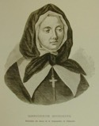

Beaubien-Perrault-Benington - Person Sheet
Beaubien-Perrault-Benington - Person Sheet

NameMarguerite Bourgeoys492
Birth17 Apr 1620, Troyes, Champagne, France43
Death12 Jan 1700, Montréal, Quebec43
Burial13 Jan 1700, Montréal, Quebec43
Occupationreligieuse
FatherAbraham Bourgeoys
MotherGuillemette Garnier
Notes for Marguerite Bourgeoys
[DBC] Entre dans la congrégation externe des soeurs de Notre-Dame en 1640. Présentée a Maisonneuve en 1652, par sa soeur, Mère Louise de Chomedey de Ste-Marie, la directrice des congréganistes. Part pour le Canada en février 1653, mais n'arrive qu'en septembre. Engage les colons à la corvée de la construction de la chapelle de ND de Bonsecours (1657). Accueille les premiers écoliers en 1658. Retourne en France en 1658 et ramène les filles du roy. Voyage en France en 1670 pour obtenir, en 1671, du roi les lettres patentes de sa communauté. Elle ramène de France trois de ses nièces, dont Louise Sommillard q.v.. Ouvre écoles dans la région de Montréal (1676-80). École a Ste-Famille, I.O. en 1685. Hôpital Général de Québec en 1689. École pour filles pauvres a Québec (1692). Elle démissionne en 1693, a l'age de 73 ans. Mgr de St-Vallier veut les assimiler aux Ursulines ou leur imposer le cloître: Soeur Barbier q.v., la nouvelle générale, réussit à faire modifier la règle. M. Bourgeoys décède le 12 janvier 1700, a l'age de 79 ans. Canonisée le 31 octobre 1982 a Rome, par Jean-Paul II.
27 La rue Bourgeoys est nommée en son honneur à Montréal.
27 La rue Bourgeoys est nommée en son honneur à Montréal.